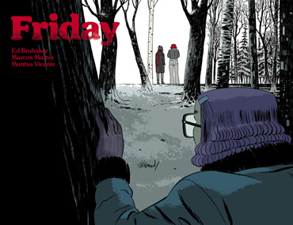

Friday (intégrale)
NON, 2021
Ce comics en trois tome nous plonge au fin fond des années 70, dans un petit village rempli de mystères. Deux adolescents mènent l'enquête ensemble depuis leur plus jeune âge. Cependant, quelque chose s'est brisé entre eux lorsque Friday est partie à la fac. Lorsqu'elle revient pour les vacances de Noël, un nouveau mystère l'attend.
Sur le dos, cétait écrit "entre Stranger Things et Stephan King", franchement c'est totalement ça ! Je suis totalement tombée sous le charme de ce bouquin. J'aurai aimé suivre leurs aventures encore et encore, je veux des préquels de tout ce qu'ils ont vécu depuis leur plus jeune âge. S'il vous plaît, j'en ai besoin !
Retour à l'accueil